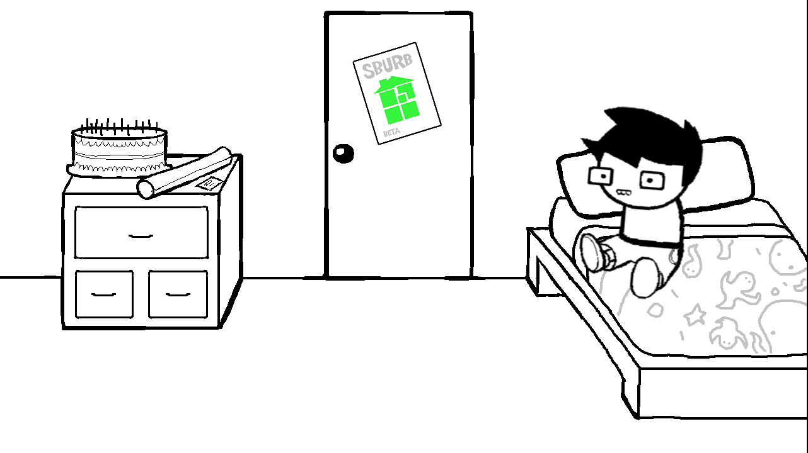
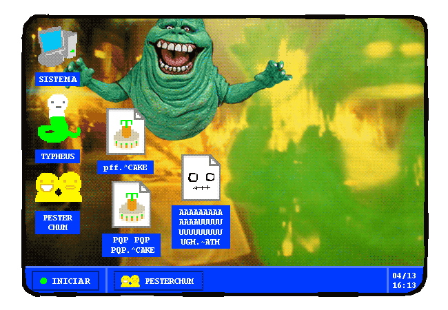
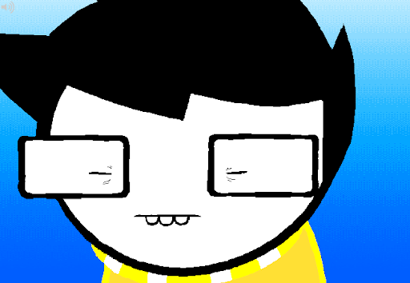
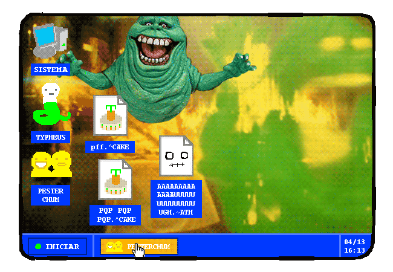
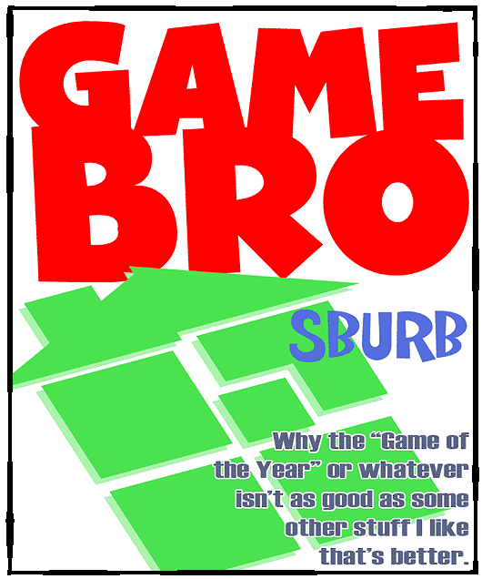
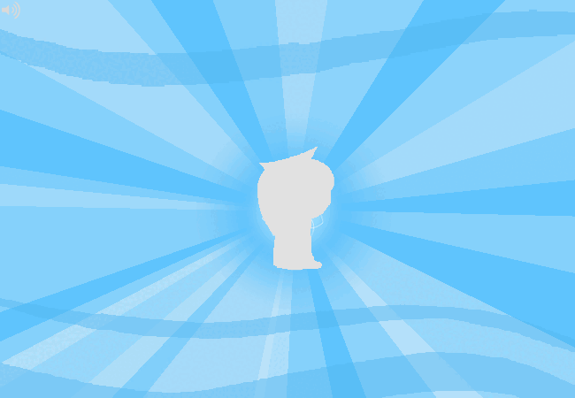

Homestuck
Você é um jovem rapaz que no momento esta deitado em sua cama relaxando, na qual você esta quase caindo no sono, um sono onde você não tem ideia de quanto tempo que ira durar.
O que você fará?
> Ir para o computador
Você decide ir para o seu computador, o ligando e sentando em sua cadeira. na qual não esta nas melhores condições, mas é utilizavel... por enquanto.
ja estando no computador, você ve dois aplicativos, sendo um deles um app de comunicação chamado "pesterchum" e o outro sendo um navegador comum.
O que você fará?
> Continuar deitado
Você decide permanecer em sua cama, fazendo você cair de vez no sono, o fazendo dormir.
Em seu sonho você tem muita dificuldade de abrir seus olhos, parendo que eles pesam muito mais do que deveriam.
O que você fará?
> Entrar no Pesterchum
Você decide entrar em seu Pesterchum, vendo apenas o menu do aplicativo, talvez pessoas usem esses tipos de aplicativos para conversar umas entres as outras?
Você nota que há um chum pendente no canto da tela.
"O que você fará?" VAI LOGO RESPONDER!
> Entrar no navegador
Você decide entrar em seu navegador, no qual ja estava com uma guia aberta, você clica quase que instantaneamente na guia ja aberta, te redirecionando para um site peculiar...
> Tentar abrir seus olhos
Você força seus olhos para abrirem, te dando um pequeno vislumbre do que há em sua frente neste sonho... um tanto quanto estranho...
O que você fará?